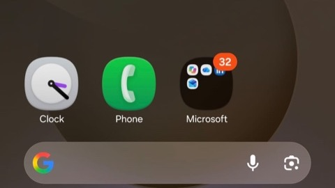
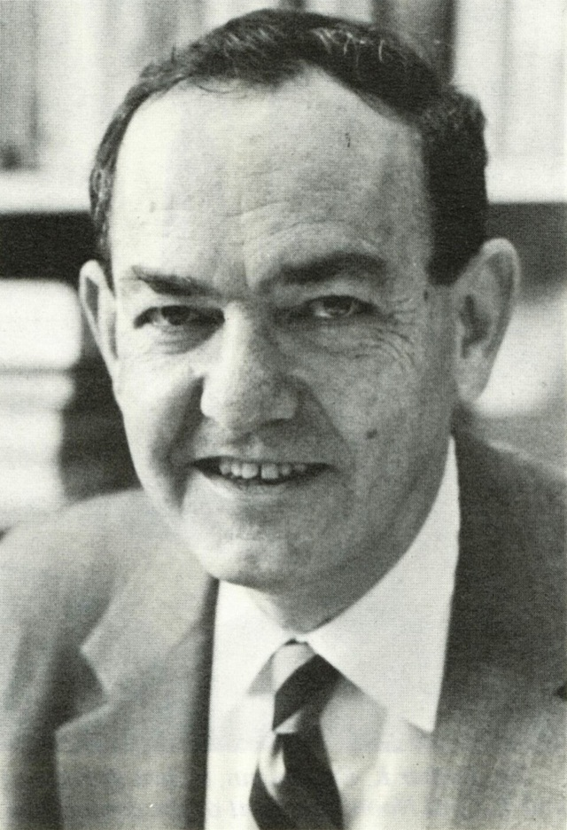

Persuasive technology
Persuasive technology is "technology that is designed to change attitudes or behaviors of the users through persuasion and social influence, but not necessarily through coercion". In 1998 B. J. Fogg described three ways technology can persuade: as a tool, as a medium and as a social actor. Whether this is acceptable "remains an open ethical debate", also because the relationship is unequal: the person being persuaded "often cannot respond in kind" [1].
B. J. Fogg and Stanford
Fogg is a social scientist at Stanford, where he founded the Persuasive Technology Lab, today called the Behavior Design Lab. In 2003 he published the book "Persuasive Technology: Using Computers to Change What We Think and Do". In 2007 he co-taught a course on Facebook apps with Dave McClure; his students' apps reached millions of users in ten weeks.
Among his students were Mike Krieger, who later co-founded Instagram, and Tristan Harris, who became one of the strongest critics of apps like it [2]: the same classroom produced both sides of the story.
The Fogg Behavior Model: B = MAP
Fogg's best-known idea fits in one line:
"Behavior happens when Motivation, Ability, and a Prompt come together at the same time. When a behavior does not occur, at least one of those three elements is missing."
B. J. Fogg [3]
Motivation comes from three pairs: pleasure and pain, hope and fear, acceptance and rejection. Ability means how easy the action is: "Simplicity is a function of your scarcest resource at that moment", such as time, money, effort or attention. The two compensate each other: the easier an action is, the less motivation it needs [3]. This is why apps try to make everything one tap away.
The prompt

The third element is the prompt: "Prompts tell people to 'do it now!'". Fogg called it "trigger" until 2017 [3]. On a phone, the most common prompt is the notification badge: the red "32" on the app folder in this screenshot is there to make you open it.
Nir Eyal's Hook Model
Nir Eyal turned these ideas into a recipe in four steps: trigger, action, variable reward, investment. A trigger can be external (an email, a link, an app icon like the badge above) or internal, a feeling that, after many repetitions, becomes linked to the app. The action must be as easy as possible, following Fogg. The reward is variable, like a slot machine (see the mechanics page). Finally the user invests "time, data, effort, social capital or money", such as followers, posts and preferences, which makes the app harder to leave [4].
Eyal published his book "Hooked: How to Build Habit-Forming Products" in 2014 [5] as a guide for product designers, and that is exactly what makes it interesting for an ethics page.
The attention economy

Why do companies want our habits? Because of the attention economy: "the incentives of advertising-driven companies, in particular, to maximize the time and attention their users give to their product". The economist Herbert Simon saw the problem already in 1971:
"A wealth of information creates a poverty of attention and a need to allocate that attention efficiently among the overabundance of information sources that might consume it."
Herbert Simon, "Designing Organizations for an Information-Rich World", 1971 [6]
In the mid-1990s Thomas H. Davenport and Michael Goldhaber started writing about an "attention economy" [6].
Conclusion
Persuasive design is not bad in itself: the same models can help people build good habits. The problem starts when the goal is not the user's, but the advertiser's. The next page looks at what this costs users.
Sources
- Wikipedia, "Persuasive technology". en.wikipedia.org
- Wikipedia, "B. J. Fogg". en.wikipedia.org
- B. J. Fogg, "Fogg Behavior Model". behaviormodel.org
- Nir Eyal, "The Hooked Model: How to Manufacture Desire in 4 Steps". nirandfar.com
- Wikipedia, "Nir Eyal". en.wikipedia.org
- Wikipedia, "Attention economy". en.wikipedia.org